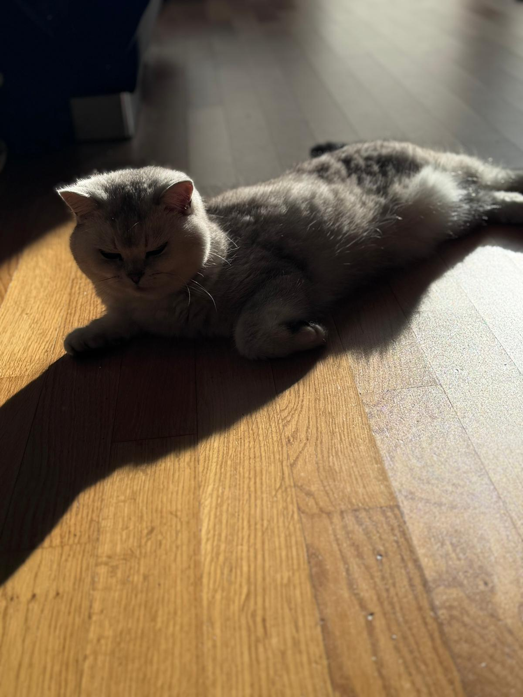
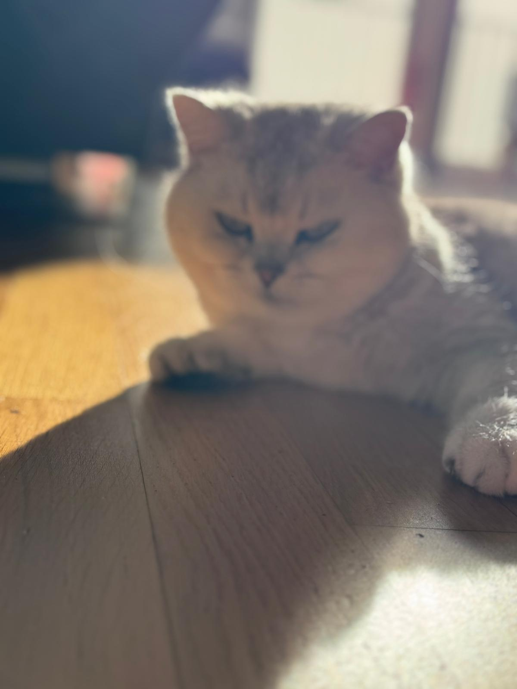
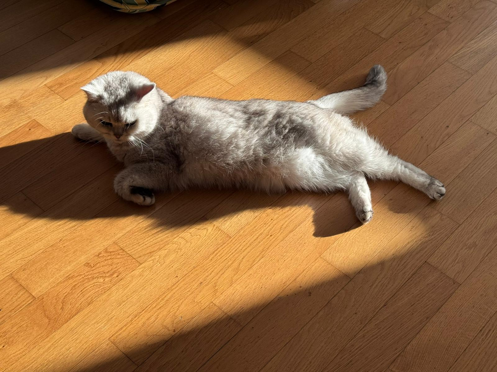

König auf vier Pfoten.
Niemand lounget schöner.
Eine Legende braucht keine Einführung – aber bitte, gerne.

Gestattet mir – ich bin Jinx, und ich bin das, was Majesät wirklich bedeutet. Als reinrassiger British Shorthair weiß ich genau, was mir zusteht: die beste Sonnenstelle, die weichste Decke und die ungeteilte Aufmerksamkeit jedes Raumes.
Seit 6 Jahren beweise ich täglich, dass wahre Eleganz keine Anstrengung braucht. Man muss sie einfach sein. Meine Fans auf Instagram können das bestätigen.
Mein Geheimnis? Ich schlafe, wann ich will. Ich fresse, wann es mir passt. Und ich lasse mich streicheln – aber nur, wenn ich in Stimmung bin.
Alles natürlich, nichts gelernt.
Jedes Bild ein Kunstwerk. Natürlich.

Täglich neue Momente aus meinem royalen Alltag.
Wer nicht folgt, verpasst das Schönste.